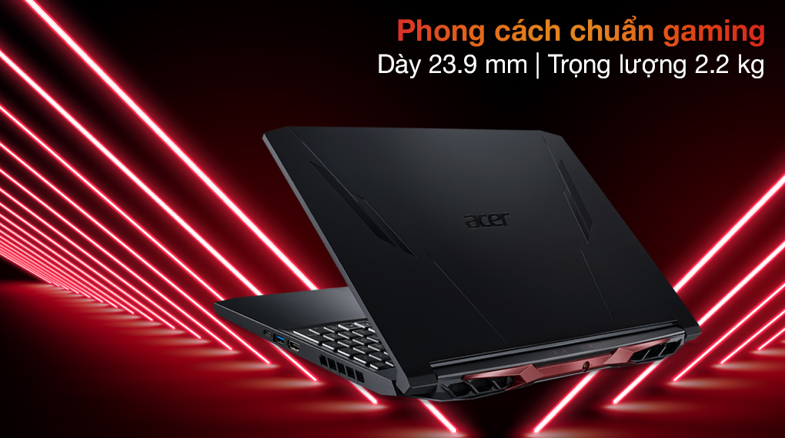

Acer Nitro Gaming được trang bị bộ vi xử lý Intel Core i7 Tiger Lake với cấu trúc 8 nhân 16 luồng có tốc độ đạt tối đa đến 4.6 GHz nhờ Turbo Boost cho máy hiệu năng mạnh mẽ chạy tốt các tựa game cấu hình cao, xử lý các tác vụ đồ họa chuyên nghiệp một cách trơn tru.
RAM 8 GB chuẩn DDR4 2 khe (1 khe 8 GB + 1 khe rời) cùng khả năng nâng cấp tối đa lên đến 32 GB xử lý đa nhiệm cùng lúc nhiều tác vụ, việc di chuyển qua lại giữa các phần mềm, chạy đồng thời các ứng dụng đồ họa mà không lo hiện tượng giật, lag.
Ổ cứng SSD 512 GB NVMe PCle cung cấp thời gian khởi động máy và các phần mềm nhanh chóng trong vài giây, bạn có thể tháo ổ cứng mặc định để lắp thanh khác nâng cấp lên đến 1 TB. Chưa dừng ở đó, laptop Acer hỗ trợ 1 khe cắm SSD M.2 PCIe mở rộng và 1 khe cắm HDD SATA (nâng cấp tối đa 2 TB) để bạn có thể mở rộng thêm không gian lưu trữ, biến chiếc laptop của bạn thành 1 kho lưu trữ khổng lồ mà không cần thiết bị hỗ trợ khác.
Laptop Acer Nitro sở hữu thiết kế ấn tượng với hai màu đen đỏ chủ đạo. Bề mặt được thiết kế hầm hố và góc cạnh hơn. Thể hiện phong cách hiếu chiến đặc trưng của dòng Nitro. Vỏ máy được làm bằng nhựa với trọng lượng 2.2 kg và dày 23.9 mm bạn có thể dễ dàng để vào balo để mang theo khi đi làm, đi học.
RAM 8 GB chuẩn DDR4 2 khe (1 khe 8 GB + 1 khe rời) cùng khả năng nâng cấp tố i đa lên đến 32 GB xử lý đa nhiệm cùng lúc nhiều tác vụ, việc di chuyển qua lại giữa các phần mềm, chạy đồng thời các ứng dụng đồ họa mà không lo hiện tượng giật, lag.